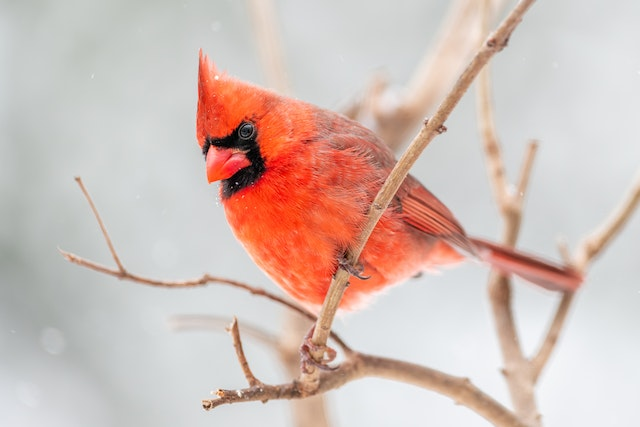
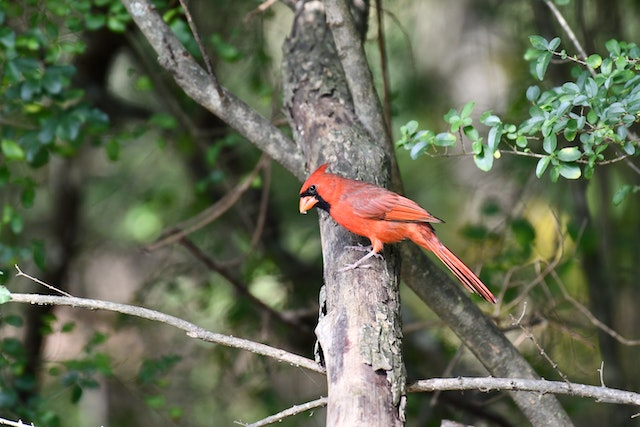
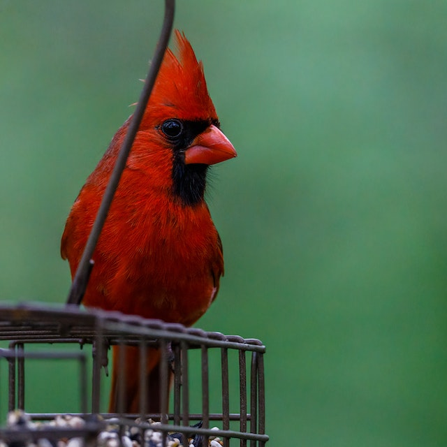
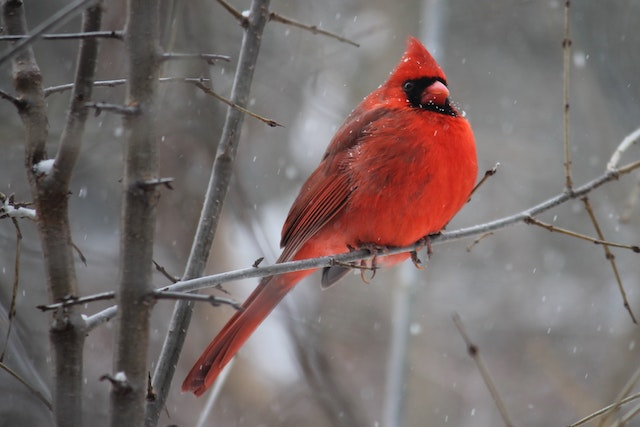

Northern Cardinals are classified as granivorous animals because they live on a diet
consisting of mostly seeds. Their short, stout, cone-shaped beaks are specially designed to crack open
the hulls on seeds and shells on nuts.

The average lifespan of a Northern Cardinal is approximately three years due to the
hazards they face, which include predators, disease, accidents, and starvation.

In the winter months, Northern Cardinals forego their territorial ways and congregate
together to form flocks.

The Northern Cardinal’s song sounds as if they are saying “birdie, birdie, birdie” or
“cheer, cheer, cheer.” This distinctive vocalization pattern allows many birders to easily identify the
cardinal when it’s singing.